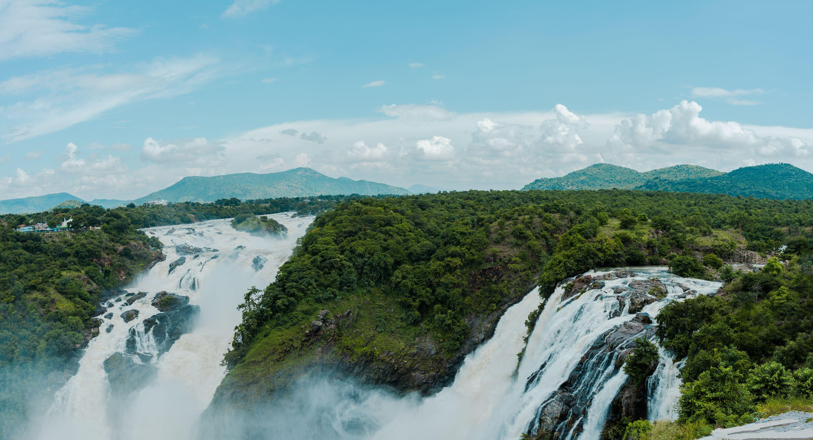
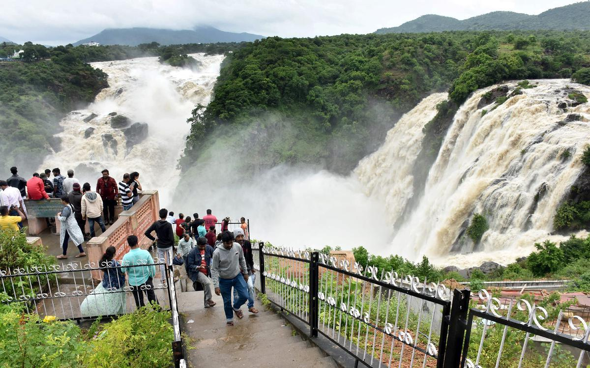
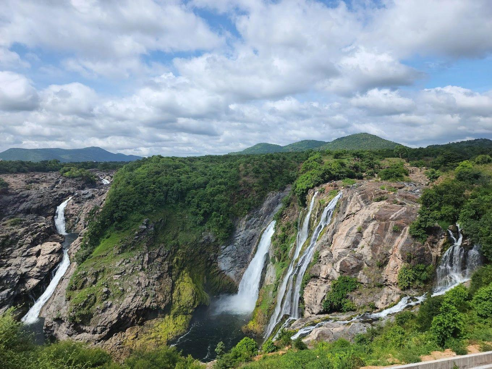

Gaganachukki Waterfalls
One of Karnataka's most spectacular waterfalls located at Shivanasamudra.
Gaganachukki Waterfalls is one of the twin waterfalls formed by the River Kaveri at Shivanasamudra. It is famous for its breathtaking views, roaring waterfalls, green surroundings and photography spots. Thousands of tourists visit this place especially during the monsoon season.
Loading...
Shivanasamudra, Chamarajanagar District, Karnataka
8:00 AM – 5:30 PM
Free Entry
July – October (Monsoon Season)
Parking Available Near Entrance
| Place | Distance |
|---|---|
| Mysuru | 65 km |
| Bengaluru | 130 km |
| Kollegal | 35 km |
| Chamarajanagar | 80 km |
Distance: 3 km
⭐⭐⭐⭐☆
Distance: 2 km
⭐⭐⭐⭐☆
Distance: 5 km
⭐⭐⭐☆☆
South Indian Meals
Veg & Non-Veg Available
Breakfast, Lunch & Dinner


